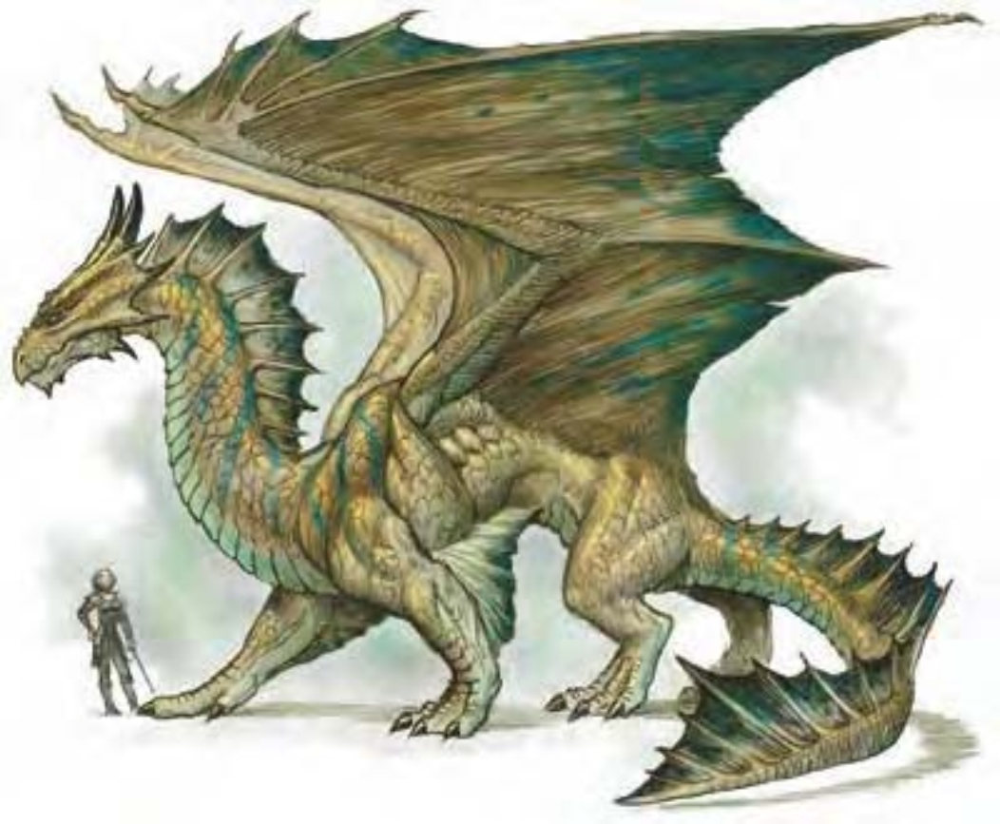

冠从脸颊和眼睛之后长出，上有肋棱及沟纹，肋的末端为弯曲的角。下巴和下颚也长有小角。喙状尖鼻，面颈有皱褶。青铜龙身边围绕着海的气味，鳞片闪耀金棕色的金属色泽。
青铜龙生性好奇，喜欢变成小型的友善动物以观察冒险者。对战争很着迷，会迫不及待的为了正义或不错的报酬加入军旅。
雏龙的鳞片为黄中带绿，只能隐约看出一点青铜色。随着年龄迈向成年期，鳞片颜色会慢慢变深变浓，极老龙的鳞片边缘带点蓝黑色。青铜龙非常善于游泳，脚掌有蹼，鳞片既光滑又平顺。随着年龄瞳孔会逐渐变淡，最后眼睛就像是一个发光的绿球。
青铜龙喜欢待在靠近较深的淡水或海水的海边丘陵，经常潜到水底深处以降低体温或搜寻珍珠及沉没的宝藏。他们喜欢住在只能从水中出入的洞穴，但巢穴会常保干燥，不会在水里产卵、睡觉或储藏宝藏。龙身散发出海浪气味，以水生植物及部分海产为食，尤其喜爱鲨鱼肉，偶尔也吃些珍珠。
青铜龙的环境与社群环境：温带丘陵。
组织：雏龙、幼龙、少年龙、青少年龙和青年龙：单独或数尾 (2-5)；成年龙、壮年龙、老年龙、极老龙、古龙、上古龙或太古龙：单独、成双或一家 (1-2，加上2-5个后代)。
挑战级数：雏龙3、幼龙5、少年龙7、青少年龙9、青年龙12、成年龙15、壮年龙18、老年龙19、极老龙20、古龙22、上古龙23、太古龙25。
宝藏：三倍标准。
阵营：总是守序善良。
进化：雏龙10-11HD；幼龙10-11HD；少年龙13-14HD；青少年龙16-17HD；青年龙19-20HD；成年龙22-23HD；壮年龙25-26HD；老年龙28-29HD；极老龙31-32HD；古龙34-35HD；上古龙37-38HD；太古龙40+ HD。
等级修正值：雏龙+4；幼龙+4；少年龙+6；其余无。
| 资料栏位 | 青少年青铜龙 (Juvenile Bronze Dragon) 大型龙 (水系) |
| 生命骰 | 15d12+45 (142HP) |
| 先攻 | +4 |
| 速度 | 40英尺 (8格)、飞行150英尺 (不良)、游泳60英尺 |
| 防御等级 | 23 (-1体型、+14天生)、接触9、措手不及23 |
| 基本攻击/擒抱 | +15 / +23 |
| 攻击 | 啮咬+18近战 (2d6+4) |
| 全力攻击 | 啮咬+18近战 (2d6+4) 及 2爪抓+17近战 (1d8+2) 及 2翼击+16近战 (1d6+2) 及 尾巴拍击+16近战 (1d8+6) |
| 占据/触及 | 10英尺 / 5英尺 (啮咬时10英尺) |
| 特殊攻击 | 喷吐攻击、类法术能力、法术 |
| 特殊能力 | 化形、黑暗视觉120英尺、对电击/“睡眠术”/麻痹免疫、昏暗视觉、水中呼吸 |
| 豁免 | 强韧+12、反射+9、意志+13 |
| 属性 | 力量19、敏捷10、体质17、智力18、感知19、魅力18 |
| 技能与专长 | 估价+9、唬骗+9、专注+20、交涉+25、易容+21、躲藏+5、威吓+11、神秘知识+9、知识 (地方)+9、自然知识+9、聆听+21、搜索+21、察言观色+21、法术辨识+23、侦察+21、游泳+8、生存+9 专长：空袭、盘旋、精通先攻、多重攻击、专攻武器 (爪抓)、翻转 |
| 环境/阵营/CR | 温带丘陵 / 总是守序善良 / 挑战级数：9 |
青铜龙不喜欢杀生，宁可贿赂对方 (可能是用食物) 或用魔法逼迫对方离开。他们使用“侦测思想”来探知智能生物的意图。展开攻击时，会先用“云雾术”遮蔽对方视线再冲向敌人或从天而降攫取对手。对付海上航行的目标时，会召唤暴风雨或用尾巴猛烈敲打船身。如果这只龙的个性比较温和，遭受攻击的船可能只是被迫停驶、被浓雾笼罩或桅杆断裂而已。
喷吐攻击 (超自然)：青铜龙有两种喷吐攻击，射出直线状闪电或是锥状“防生物力场”气体。在锥状范围内的生物必须进行意志检定，失败就无法进行任何动作，只能移离青铜龙1d6轮，每一年龄层再加一轮。属于影响心灵的胁迫附魔效果。
青少年青铜龙范例：60英尺直线，8d6点电击伤害，通过反射检定 (DC=20) 则伤害减半；或40英尺锥状，“防生物力场”1d6+4轮，通过意志检定 (DC=20) 则无效。
水中呼吸 (特异)：青铜龙可以在水中呼吸，潜水时仍可使用喷吐攻击、法术及其他能力。
化形 (超自然)：每天三次，青铜龙可以用标准动作化为任何中体型以下的动物或人形生物。青铜龙可持续保持变形形态，直到决定变回或更换形态为止。
类法术能力：随意施展――“动物交谈”；每天3次――“造粮术” (成年龙或更老的龙)、“云雾术” (成年龙或更老的龙)、“侦测思想” (老年龙或更老的龙)、“操控水位” (古龙或更老的龙)；每天1次――“操控天气” (太古龙)。
技能：“易容”、“游泳”和“生存”为青铜龙的本职技能。
青少年青铜龙细节：
类法术能力 (青少年)：随意施展――“动物交谈”，施法者等级4。
法术 (青少年)：视同三级术士。一般已知术士法术 (6/6；豁免检定DC=14+法术等级)：
零级――“舞光术”、“侦测魔法”、“法师帮手”、“冷冻射线”、“阅读魔法”；
一级――“活化绳”、“魔法飞弹”、“护盾术”。
| 年龄层 | 体型 | 生命骰 (HP) | 力 | 敏 | 体 | 智 | 感 | 魅 | 基本攻击 / 擒抱 | 基本攻击 | 强韧 | 反射 | 意志 | 喷吐攻击 (DC) | 威势DC |
|---|---|---|---|---|---|---|---|---|---|---|---|---|---|---|---|
| 雏龙 | 小 | 6d12+6 (45) | 13 | 10 | 13 | 14 | 15 | 14 | +6 / +3 | +8 | +6 | +5 | +7 | 2d6 (14) | ― |
| 幼龙 | 中 | 9d12+18 (76) | 15 | 10 | 15 | 14 | 15 | 14 | +9 / +11 | +11 | +8 | +6 | +8 | 4d6 (16) | ― |
| 少年龙 | 中 | 12d12+24 (102) | 17 | 10 | 15 | 16 | 17 | 16 | +12 / +15 | +15 | +10 | +8 | +11 | 6d6 (18) | ― |
| 青少年龙 | 大 | 15d12+45 (142) | 19 | 10 | 17 | 18 | 19 | 18 | +15 / +23 | +18 | +12 | +9 | +13 | 8d6 (20) | ― |
| 青年龙 | 大 | 18d12+72 (189) | 23 | 10 | 19 | 18 | 19 | 18 | +18 / +28 | +23 | +15 | +11 | +15 | 10d6 (23) | 23 |
| 成年龙 | 超大 | 21d12+105 (241) | 27 | 10 | 21 | 20 | 21 | 20 | +21 / +37 | +27 | +17 | +12 | +17 | 12d6 (25) | 25 |
| 壮年龙 | 超大 | 24d12+120 (276) | 29 | 10 | 21 | 20 | 21 | 20 | +24 / +41 | +31 | +19 | +14 | +19 | 14d6 (27) | 27 |
| 老年龙 | 超大 | 27d12+162 (337) | 31 | 10 | 23 | 22 | 23 | 22 | +27 / +45 | +35 | +21 | +15 | +21 | 16d6 (29) | 29 |
| 极老龙 | 超大 | 30d12+180 (375) | 33 | 10 | 23 | 22 | 23 | 22 | +30 / +49 | +39 | +23 | +17 | +23 | 18d6 (31) | 31 |
| 古龙 | 超大 | 33d12+231 (445) | 35 | 10 | 25 | 24 | 25 | 24 | +33 / +57 | +41 | +25 | +18 | +25 | 20d6 (33) | 33 |
| 上古龙 | 巨 | 36d12+288 (522) | 37 | 10 | 27 | 26 | 27 | 26 | +36 / +61 | +45 | +28 | +20 | +28 | 22d6 (36) | 36 |
| 太古龙 | 巨 | 39d12+312 (565) | 39 | 10 | 27 | 26 | 27 | 26 | +39 / +65 | +49 | +29 | +21 | +29 | 22d6 (37) | 37 |
| 年龄层 | 速度 | 先攻权 | 防御等级 | 特殊能力 | 施法者等级 | SR |
|---|---|---|---|---|---|---|
| 雏龙 | 40英尺、飞行100英尺 (普通)、游泳60英尺 | +0 | 16 (+1体型、+5天生)、接触11、措手不及16 | 对电击免疫、水中呼吸、“动物交谈” | ― | ― |
| 幼龙 | 40英尺、飞行150英尺 (不良)、游泳60英尺 | +0 | 18 (+8天生)、接触10、措手不及18 | 对电击免疫、水中呼吸、“动物交谈” | ― | ― |
| 少年龙 | 40英尺、飞行150英尺 (不良)、游泳60英尺 | +0 | 21 (+11天生)、接触10、措手不及21 | “化形” | 1级 | ― |
| 青少年龙 | 40英尺、飞行150英尺 (不良)、游泳60英尺 | +0 | 23 (-1体型、+14天生)、接触9、措手不及23 | 化形 | 3级 | ― |
| 青年龙 | 40英尺、飞行150英尺 (不良)、游泳60英尺 | +0 | 26 (-1体型、+17天生)、接触9、措手不及26 | 伤害减免5 / 魔法 | 5级 | 20 |
| 成年龙 | 40英尺、飞行150英尺 (不良)、游泳60英尺 | +0 | 28 (-2体型、+20天生)、接触8、措手不及28 | “造粮术”、“云雾术” | 7级 | 22 |
| 壮年龙 | 40英尺、飞行150英尺 (不良)、游泳60英尺 | +0 | 31 (-2体型、+23天生)、接触8、措手不及31 | 伤害减免10 / 魔法 | 9级 | 23 |
| 老年龙 | 40英尺、飞行150英尺 (不良)、游泳60英尺 | +0 | 34 (-2体型、+26天生)、接触8、措手不及34 | “侦测思想” | 11级 | 25 |
| 极老龙 | 40英尺、飞行150英尺 (不良)、游泳60英尺 | +0 | 37 (-2体型、+29天生)、接触8、措手不及37 | 伤害减免15 / 魔法 | 13级 | 26 |
| 古龙 | 40英尺、飞行200英尺 (笨拙)、游泳60英尺 | +0 | 38 (-4体型、+32天生)、接触6、措手不及38 | “操控水位” | 15级 | 28 |
| 上古龙 | 40英尺、飞行200英尺 (笨拙)、游泳60英尺 | +0 | 41 (-4体型、+35天生)、接触6、措手不及41 | 伤害减免20 / 魔法 | 17级 | 29 |
| 太古龙 | 40英尺、飞行200英尺 (笨拙)、游泳60英尺 | +0 | 44 (-4体型、+38天生)、接触6、措手不及44 | “操控天气” | 19级 | 31 |
* 亦可施展牧师法术及混乱、邪恶与火领域的法术，均视为秘法术。